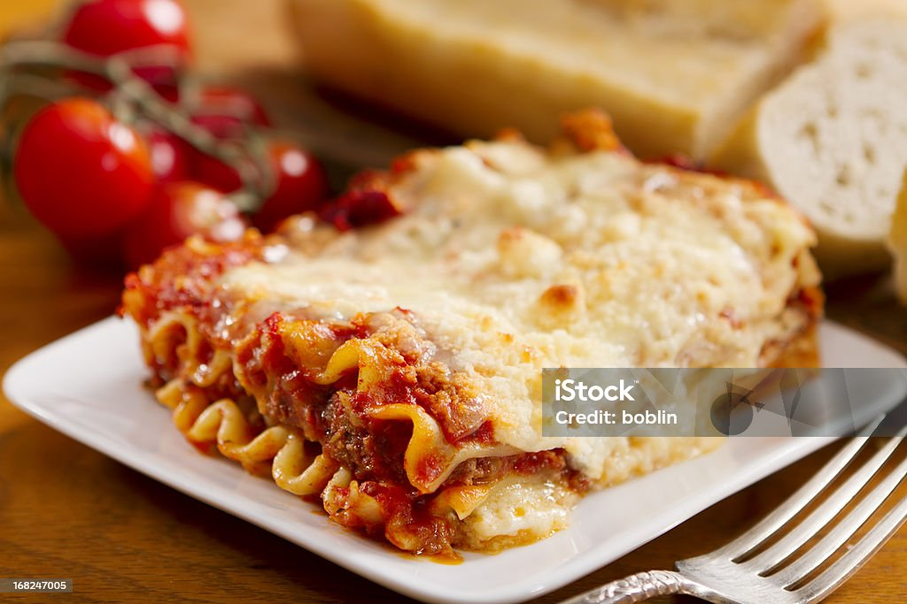

Home

Lasagna Recipes
Lasagna holds a special place in my heart because it was the first dish I ever learned to cook entirely on my own.
I remember it was a rainy Saturday afternoon, and I was feeling particularly adventurous in the kitchen.
Armed with a recipe I found online and a craving for comfort food, I set out to create my very own lasagna masterpiece.
As I chopped onions and minced garlic, the kitchen filled with the aroma of simmering tomato sauce, and I felt a sense of accomplishment wash over me.
Layer by layer, I assembled the lasagna, carefully spreading each ingredient to create a perfect balance of flavors and textures.
When the lasagna finally emerged from the oven, golden and bubbling, I couldn't help but feel a surge of pride.
As I took that first bite, I was transported to a place of warmth and contentment.
It wasn't just about the delicious taste of the lasagna itself; it was about the journey of creation and the joy of sharing a homemade meal with loved ones.
Since then, lasagna has remained a staple in my cooking repertoire, always reminding me of that rainy day when I discovered the joy of culinary exploration.
Ingredients:
- 1 pound ground beef
- 1 onion, diced
- 4 cloves garlic, minced
- 1 (28-ounce) can crushed tomatoes
- 2 tablespoons tomato paste
- 2 teaspoons dried basil
- 1 teaspoon dried oregano
- Salt and pepper to taste
- 12 lasagna noodles, cooked according to package instructions
- 3 cups shredded mozzarella cheese
- 1 1/2 cups ricotta cheese
- 1/2 cup grated Parmesan cheese
- Fresh basil leaves for garnish (optional)
Steps:
- Preheat your oven to 375°F (190°C).
- In a large skillet, cook the ground beef over medium heat until browned.
Add the diced onion and minced garlic, and cook until the onion is soft and translucent.
- Stir in the crushed tomatoes, tomato paste, basil, oregano, salt, and pepper.
Simmer the sauce for about 10-15 minutes, allowing the flavors to meld together.
- In a separate bowl, combine the ricotta cheese and grated Parmesan cheese.
- To assemble the lasagna, spread a thin layer of the meat sauce in the bottom of a 9x13-inch baking dish.
Place a layer of cooked lasagna noodles on top of the sauce. Spread half of the ricotta cheese mixture over the noodles, followed by a layer of shredded mozzarella cheese.
Repeat the layers, ending with a final layer of meat sauce and shredded mozzarella cheese on top.
- Cover the baking dish with aluminum foil and bake in the preheated oven for 25 minutes.
Then, remove the foil and bake for an additional 10-15 minutes, or until the cheese is bubbly and golden brown.
- Let the lasagna cool for a few minutes before slicing.
Garnish with fresh basil leaves if desired, and serve hot.